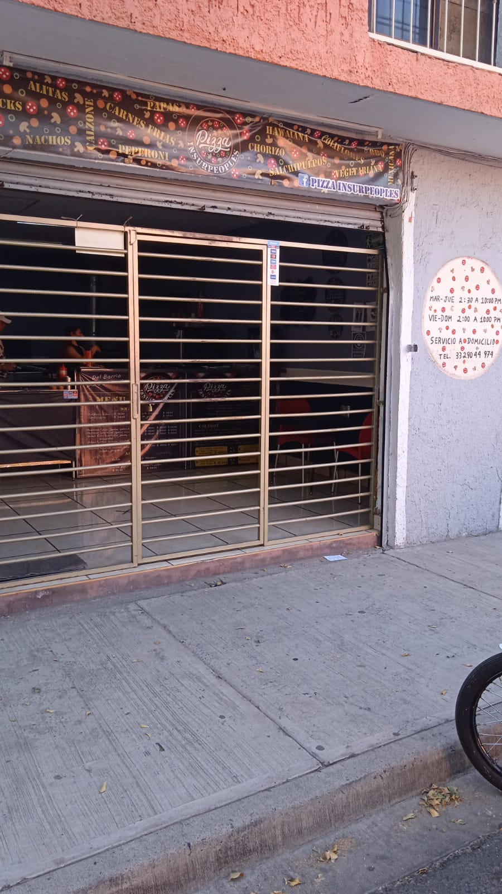

¿Como nació pizza insurpeoples?
"Por medio de un contacto que sabía que me dedicaba al ramo de los alimentos, me presentó al dueño anterior del negocio, platicamos y llegamos a un acuerdo para realizar el traspaso. Actualmente soy el dueño de la pizzería, cambié el nombre al nombre actual y agregué platillos nuevos, mas equipos de trabajo e innové la forma de vender la pizza de una forma diferente con combos atractivos y variedad de alimentos, Así mismo mes con mes doy la propuesta de un alimento diferente que no esté en la carta para dar una opción mas" (Hugo barreras, propietario). Y así es como nació pizzas insurpeoples, un concepto diferente a las pizzerías tradicionales.
